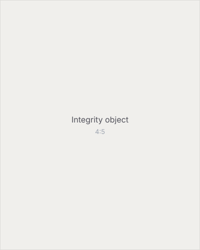
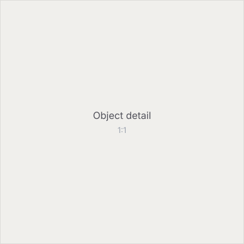

Senior Portfolio · Class of 2026
Ethan Stoner
My name is Ethan Stoner, and I'm part of the Class of 2026 at Great Oak High School. This portfolio shows my work, growth, and goals from senior year, including my scholarship project, integrity essay, reflection speech, and P.I.T video on passion, involvement, and teamwork.
A big part of who I am is my passion for computer science. I love building projects, learning new skills, and figuring out how things work.
After high school, I plan to keep studying computer science, sharpen my programming skills, and build a career in technology.
What I've built
- kvstore A key-value database I built from scratch in Java to learn how databases actually work.
- csusm-monitor A live dashboard that counts people on a campus in real time using computer vision.
- 3d-generator A web app that turns photos into 3D models, running locally on a GPU.
- auto-youtube-pipeline An automation system that records, edits, and uploads YouTube videos on its own.
01 · Scholarship
Research Project
My research project on the rapid advancement of computers and technology.
02 · Integrity
Integrity Essay
My integrity essay with extended analogy.


03 · Reflection
Graduation Speech
When I look back at high school, I think about how much I have changed from freshman year to now. I came into high school not really knowing exactly who I was or what I wanted to do. I knew I liked technology and computers, but I did not fully understand how that could become part of my future. Over time, I started learning more about computer science, coding, websites, and building projects. That helped me find something I actually care about.
High school has taught me that growth does not happen all at once. It happens slowly through mistakes, stress, deadlines, and trying again even when something does not go perfectly. There were times when school felt overwhelming, and there were times when I did not manage everything as well as I should have. But those moments still taught me something. They taught me that responsibility is not just about doing everything perfectly. It is about learning from what happens and trying to do better next time.
One of the biggest parts of high school for me has been my friends. Friends can honestly make high school feel completely different. They are the people who make boring days better, stressful weeks easier, and good memories even better. I have made friendships that mean a lot to me, and I have also lost friendships along the way. Losing friends is not always easy, but it is also part of growing up. Some people are meant to be in your life for a long time, and some people are only there for a certain chapter. Either way, they still teach you something.
My friends have played a huge role in my high school experience. They have supported me, made me laugh, helped me through hard days, and gave me memories I will always remember. A lot of the moments I will miss most are not huge events. They are the small things, like random conversations, inside jokes, hanging out after school, and just being around people who understand me. High school would not have been the same without them.
I have also learned that effort matters. In classes, projects, friendships, and outside responsibilities, I realized that things get better when you actually put time into them. This is especially true with computer science. When I work on a project, it usually does not work the first time. I have to test it, fix errors, look things up, and keep going. That process has taught me patience. It has also shown me that I can learn a lot by being willing to figure things out.
As I graduate, I feel proud of the progress I have made. I am not the same person I was when I started high school. I have more direction now, and I have a better idea of what I want for my future. After high school, I plan to continue studying computer science and keep building my skills. I want to keep making projects, learning new things, and preparing for a future in technology.
High school was not perfect, but it helped me grow. It taught me about responsibility, patience, teamwork, friendship, and finding something I am passionate about. Graduation is not just the end of high school. It is the start of the next part of my life, and I am excited to see where it goes.
04 · P.I.T
Passion · Involvement · Teamwork
A short video covering the three pillars.
P.I.T Video. Drop file at assets/pit-video.mp4
-
Passion
Computer science. Building, learning, and figuring out how things work.
-
Involvement
[Brief summary of an activity, club, or experience that shaped you.]
-
Teamwork
[Brief summary of a team or group you worked with.]